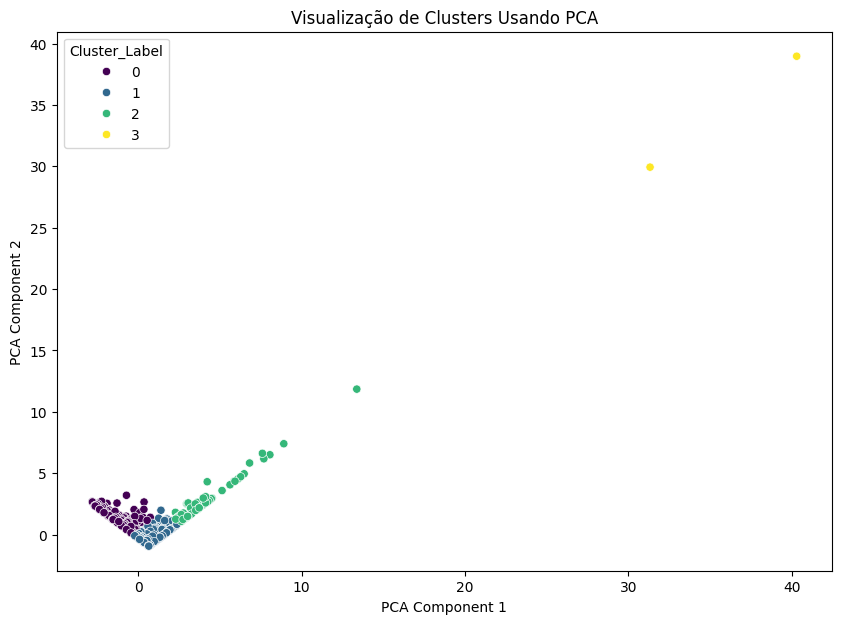
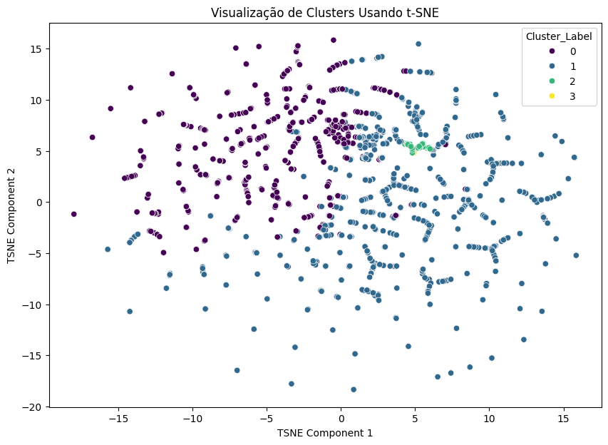

Estatísticas Globais
Total de Repositórios
Carregando...
Linguagem Mais Usada
Carregando...
Licença Mais Usada
Carregando...
Top 10 Linguagens
| Linguagem | Repositórios |
|---|
Top 10 Repositórios
| Repositório | Instituição | Estrelas |
|---|
Top 10 Licenças
| Licença | Repositórios |
|---|
Principais Clusters Identificados (popularidade e atividade)
- Cluster 0: Repositórios mais antigos e com poucas estrelas, de usuários pessoais.
- Cluster 1: Repositórios recentes e com poucas estrelas, de usuários pessoais.
- Cluster 2: Repositórios populares de Organizações e Pessoas.
- Cluster 3: Repositórios Altamente Populares (Outliers).
Visualização de Clusters (PCA)

Visualização de Clusters (t-SNE)

| ID | Descrição |
|---|---|
| 0 |
Repositórios com Poucas Estrelas e Atualizações Mais Antigas
|
| 1 |
Repositórios com Poucas Estrelas e Atualizações Recentes
|
| 2 |
Repositórios Populares de Organizações e Pessoas
|
| 3 |
Repositórios Altamente Populares (Outliers)
|
Principais Descobertas da Análise de Dados
- O conjunto de dados foi pré-processado para clusterização, tratando valores ausentes, escalando características numéricas ('Estrelas', 'Ano Atualizacao') e codificando características categóricas ('Linguagem Principal', 'Organizacao') usando one-hot encoding. Os dados processados foram representados como um DataFrame esparso.
- A clusterização K-Means com 4 clusters foi aplicada aos dados pré-processados. Os rótulos dos clusters foram adicionados ao DataFrame original.
- A qualidade dos clusters foi avaliada usando o Silhouette Score (0.3035) e o Davies-Bouldin Index (0.8797). Essas métricas indicaram uma melhor separação e definição dos clusters em comparação com a configuração de 5 clusters.
- O PCA foi utilizado para reduzir a dimensionalidade dos dados para 2 componentes, e um gráfico de dispersão visualizou os clusters nesse espaço reduzido, mostrando alguma separação visual entre os grupos, embora com alguma sobreposição entre os clusters majoritários (0 e 1).
- A visualização utilizando t-SNE mostrou como os clusters se relacionam em um espaço de menor dimensão. Esta visualização destacou:
- A clara separação dos outliers do Cluster 3.
- Uma distinção visual mais nítida entre os clusters 0 e 1 em algumas áreas, comparado ao PCA.
- A posição do Cluster 2, que parece ter características que o colocam entre os clusters majoritários e os outliers mais extremos.
Insights ou Próximos Passos
- A análise de cluster com 4 grupos revelou distinções significativas baseadas na popularidade, idade/atividade e propriedade. A configuração de 4 clusters parece capturar melhor a estrutura dos dados de acordo com as métricas avaliadas.
- Aprofundar a análise das linguagens principais e das organizações dentro de cada um dos 4 clusters identificados pode fornecer insights mais específicos.
- Embora as métricas sugiram 4 clusters como uma boa opção, a interpretação visual e a análise das características dos clusters são cruciais para validar se esta divisão faz sentido no contexto dos dados.
- Análises mais detalhadas sobre os repositórios no Cluster 2 (populares de organizações e pessoas) e no Cluster 3 (outliers) podem revelar padrões ou exemplos de destaque.
Cluster 3: Repositórios Institucionais e Pessoais mais relevantes e ativos
Uma característica distintiva deste cluster é a presença notável de repositórios associados a Organizações (aproximadamente 39.73%), em contraste com a predominância de usuários pessoais nos outros clusters. Isso sugere que este cluster inclui muitos projetos que são mantidos por grupos, laboratórios, departamentos ou iniciativas institucionais dentro das universidades e institutos federais.
| Repositório | Descrição | Estrelas | Linguagem | Organização | Link |
|---|
Filtros Rápidos
Pesquisa Rápida
Estatísticas de Resultados Filtrados
Total Filtrado
...
Linguagem Mais Usada
...
Licença Mais Usada
...
Todos os Repositórios
0 repositórios exibidos| Instituição | Nome do Repositório | Linguagem | Estrelas | Licença | Última Atualização | Descrição | Cluster | Link |
|---|---|---|---|---|---|---|---|---|
Página 1 de 1